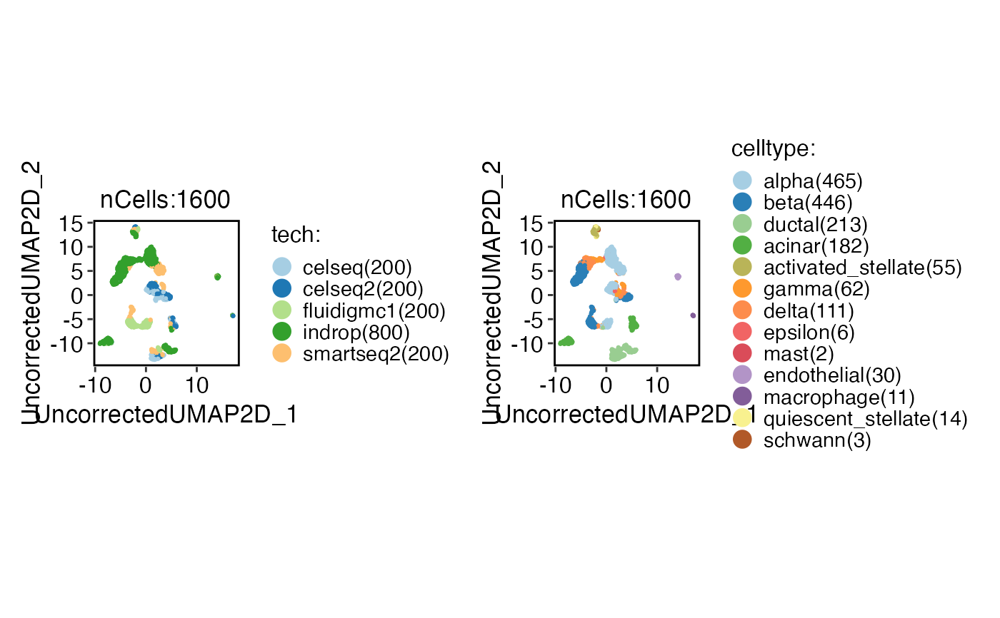
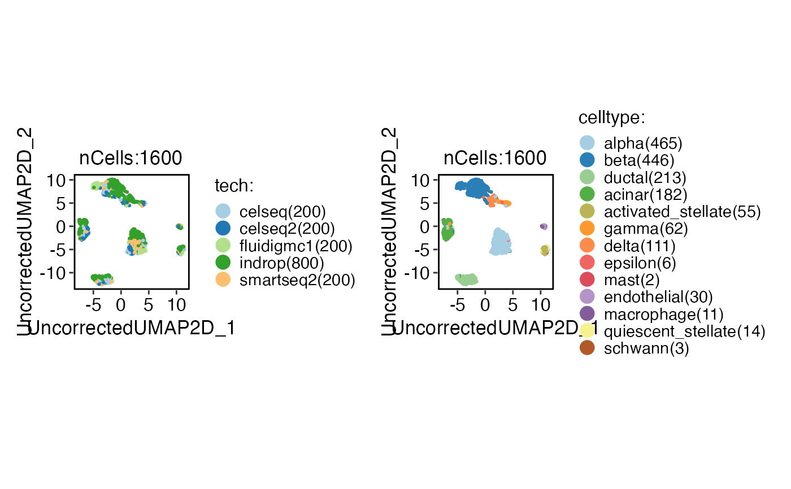
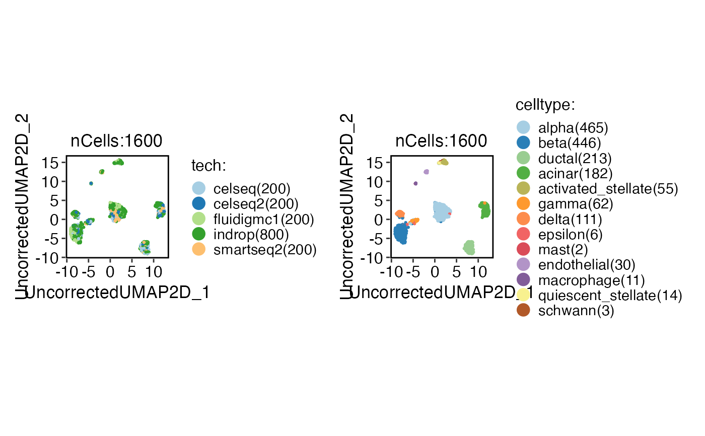
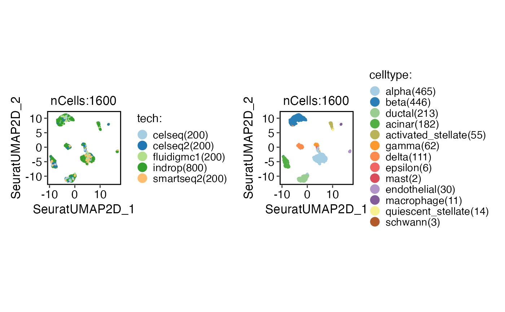

Integrate single-cell RNA-seq data using various integration methods.
Usage
integration_scop(
srt_merge = NULL,
batch,
append = TRUE,
srt_list = NULL,
assay = NULL,
integration_method = "Uncorrected",
do_normalization = NULL,
normalization_method = "LogNormalize",
do_HVF_finding = TRUE,
HVF_source = "separate",
HVF_method = "vst",
nHVF = 2000,
HVF_min_intersection = 1,
HVF = NULL,
do_scaling = TRUE,
vars_to_regress = NULL,
regression_model = "linear",
scale_within_batch = FALSE,
linear_reduction = "pca",
linear_reduction_dims = 50,
linear_reduction_dims_use = NULL,
linear_reduction_params = list(),
force_linear_reduction = FALSE,
nonlinear_reduction = "umap",
nonlinear_reduction_dims = c(2, 3),
nonlinear_reduction_params = list(),
force_nonlinear_reduction = TRUE,
neighbor_metric = "euclidean",
neighbor_k = 20L,
cluster_algorithm = "louvain",
cluster_resolution = 0.6,
seed = 11,
...
)Arguments
- srt_merge
A merged Seurat object that includes the batch information.
- batch
A character string specifying the batch variable name.
- append
The integrated data will be appended to the original Seurat object (srt_merge). Default is
TRUE.- srt_list
A list of Seurat objects to be checked and preprocessed.
- assay
The name of the assay to be used for downstream analysis.
- integration_method
A character string specifying the integration method to use. Supported methods are:
"Uncorrected","Seurat","scVI","MNN","fastMNN","Harmony","Scanorama","BBKNN","CSS","LIGER","Conos","ComBat". Default is"Uncorrected".- do_normalization
A logical value indicating whether data normalization should be performed.
- normalization_method
The normalization method to be used. Possible values are "LogNormalize", "SCT", and "TFIDF". Default is "LogNormalize".
- do_HVF_finding
A logical value indicating whether highly variable feature (HVF) finding should be performed. Default is TRUE.
- HVF_source
The source of highly variable features. Possible values are "global" and "separate". Default is "separate".
- HVF_method
The method for selecting highly variable features. Default is "vst".
- nHVF
The number of highly variable features to select. Default is 2000.
- HVF_min_intersection
The feature needs to be present in batches for a minimum number of times in order to be considered as highly variable. The default value is 1.
- HVF
A vector of highly variable features. Default is NULL.
- do_scaling
A logical value indicating whether to perform scaling. If TRUE, the function will force to scale the data using the ScaleData function.
- vars_to_regress
A vector of variable names to include as additional regression variables. Default is NULL.
- regression_model
The regression model to use for scaling. Options are "linear", "poisson", or "negativebinomial" (default is "linear").
- scale_within_batch
Whether to scale data within each batch. Only valid when the
integration_methodis one of"Uncorrected","Seurat","MNN","Harmony","BBKNN","CSS","ComBat".- linear_reduction
The linear dimensionality reduction method to use. Options are "pca", "svd", "ica", "nmf", "mds", or "glmpca" (default is "pca").
- linear_reduction_dims
The number of dimensions to keep after linear dimensionality reduction (default is 50).
- linear_reduction_dims_use
The dimensions to use for downstream analysis. If NULL, all dimensions will be used.
- linear_reduction_params
A list of parameters to pass to the linear dimensionality reduction method.
- force_linear_reduction
A logical value indicating whether to force linear dimensionality reduction even if the specified reduction is already present in the Seurat object.
- nonlinear_reduction
The nonlinear dimensionality reduction method to use. Options are "umap","umap-naive", "tsne", "dm", "phate", "pacmap", "trimap", "largevis", or "fr" (default is "umap").
- nonlinear_reduction_dims
The number of dimensions to keep after nonlinear dimensionality reduction. If a vector is provided, different numbers of dimensions can be specified for each method (default is c(2, 3)).
- nonlinear_reduction_params
A list of parameters to pass to the nonlinear dimensionality reduction method.
- force_nonlinear_reduction
A logical value indicating whether to force nonlinear dimensionality reduction even if the specified reduction is already present in the Seurat object.
- neighbor_metric
The distance metric to use for finding neighbors. Options are "euclidean", "cosine", "manhattan", or "hamming" (default is "euclidean").
- neighbor_k
The number of nearest neighbors to use for finding neighbors (default is 20).
- cluster_algorithm
The clustering algorithm to use. Options are "louvain", "slm", or "leiden" (default is "louvain").
- cluster_resolution
The resolution parameter to use for clustering. Larger values result in fewer clusters (default is 0.6).
- seed
An integer specifying the random seed for reproducibility. Default is 11.
- ...
Additional arguments to be passed to the integration method function.
Examples
data(panc8_sub)
panc8_sub <- integration_scop(
panc8_sub,
batch = "tech",
integration_method = "Uncorrected"
)
#> ℹ [2025-08-06 11:39:48] Run Uncorrected_integrate...
#> ℹ [2025-08-06 11:39:48] Spliting `srt_merge` into `srt_list` by column tech...
#> ℹ [2025-08-06 11:39:49] Checking srt_list...
#> ℹ [2025-08-06 11:39:50] Data is log-normalized
#> ℹ [2025-08-06 11:39:50] Data 1/5 of the srt_list has been log-normalized.
#> ℹ [2025-08-06 11:39:50] Perform FindVariableFeatures on the data 1/5 of the srt_list...
#> ℹ [2025-08-06 11:39:50] Data is log-normalized
#> ℹ [2025-08-06 11:39:50] Data 2/5 of the srt_list has been log-normalized.
#> ℹ [2025-08-06 11:39:50] Perform FindVariableFeatures on the data 2/5 of the srt_list...
#> ℹ [2025-08-06 11:39:50] Data is log-normalized
#> ℹ [2025-08-06 11:39:50] Data 3/5 of the srt_list has been log-normalized.
#> ℹ [2025-08-06 11:39:50] Perform FindVariableFeatures on the data 3/5 of the srt_list...
#> ℹ [2025-08-06 11:39:51] Data is log-normalized
#> ℹ [2025-08-06 11:39:51] Data 4/5 of the srt_list has been log-normalized.
#> ℹ [2025-08-06 11:39:51] Perform FindVariableFeatures on the data 4/5 of the srt_list...
#> ℹ [2025-08-06 11:39:52] Data is log-normalized
#> ℹ [2025-08-06 11:39:52] Data 5/5 of the srt_list has been log-normalized.
#> ℹ [2025-08-06 11:39:52] Perform FindVariableFeatures on the data 5/5 of the srt_list...
#> ℹ [2025-08-06 11:39:52] Use the separate HVF from srt_list...
#> ℹ [2025-08-06 11:39:52] Number of available HVF: 2000
#> ℹ [2025-08-06 11:39:52] Finished checking.
#> ℹ [2025-08-06 11:39:55] Perform Uncorrected integration on the data...
#> ℹ [2025-08-06 11:39:57] Perform ScaleData on the data...
#> ℹ [2025-08-06 11:39:57] Perform linear dimension reduction (pca) on the data...
#> ℹ [2025-08-06 11:39:57] Linear_reduction(pca) is already existed. Skip calculation.
#> Warning: The following arguments are not used: features
#> Warning: multiple layers are identified by counts.1.1.1.1 counts.2.1 counts.2.1.1 counts.2.1.1.1 data.1.1.1.1 scale.data.1.1.1.1 data.2.1.1.1 scale.data.2.1.1.1 data.2.1.1 scale.data.2.1.1 data.2.1 scale.data.2.1
#> only the first layer is used
#> ! [2025-08-06 11:39:57] Error: Not compatible with requested type: [type=S4; target=double].
#> ! [2025-08-06 11:39:57] Error when performing FindClusters. Skip this step...
#> ℹ [2025-08-06 11:39:57] Perform nonlinear dimension reduction (umap) on the data...
#> Warning: no non-missing arguments to min; returning Inf
#> Warning: no non-missing arguments to max; returning -Inf
#> ℹ [2025-08-06 11:39:57] Non-linear dimensionality reduction(umap) using Reduction(Uncorrectedpca, dims:Inf--Inf) as input
#> ! [2025-08-06 11:39:57] Error in `object[[graph]]`:
#> ! ! ‘Uncorrected_SNN’ not found in this Seurat object
#> !
#> ! [2025-08-06 11:39:57] Error when performing nonlinear dimension reduction. Skip this step...
#> ✔ [2025-08-06 11:40:00] Run Uncorrected_integrate done
#> ℹ [2025-08-06 11:40:00] Elapsed time: 11.88 secs
CellDimPlot(
panc8_sub,
group.by = c("tech", "celltype")
)
#> Warning: No shared levels found between `names(values)` of the manual scale and the
#> data's fill values.
#> Warning: No shared levels found between `names(values)` of the manual scale and the
#> data's fill values.

panc8_sub <- integration_scop(
panc8_sub,
batch = "tech",
integration_method = "Uncorrected",
HVF_min_intersection = 5
)
#> ℹ [2025-08-06 11:40:01] Run Uncorrected_integrate...
#> ℹ [2025-08-06 11:40:01] Spliting `srt_merge` into `srt_list` by column tech...
#> ℹ [2025-08-06 11:40:02] Checking srt_list...
#> ℹ [2025-08-06 11:40:02] Data is log-normalized
#> ℹ [2025-08-06 11:40:02] Data 1/5 of the srt_list has been log-normalized.
#> ℹ [2025-08-06 11:40:02] Perform FindVariableFeatures on the data 1/5 of the srt_list...
#> ℹ [2025-08-06 11:40:02] Data is log-normalized
#> ℹ [2025-08-06 11:40:02] Data 2/5 of the srt_list has been log-normalized.
#> ℹ [2025-08-06 11:40:02] Perform FindVariableFeatures on the data 2/5 of the srt_list...
#> ℹ [2025-08-06 11:40:03] Data is log-normalized
#> ℹ [2025-08-06 11:40:03] Data 3/5 of the srt_list has been log-normalized.
#> ℹ [2025-08-06 11:40:03] Perform FindVariableFeatures on the data 3/5 of the srt_list...
#> ℹ [2025-08-06 11:40:03] Data is log-normalized
#> ℹ [2025-08-06 11:40:03] Data 4/5 of the srt_list has been log-normalized.
#> ℹ [2025-08-06 11:40:03] Perform FindVariableFeatures on the data 4/5 of the srt_list...
#> ℹ [2025-08-06 11:40:04] Data is log-normalized
#> ℹ [2025-08-06 11:40:04] Data 5/5 of the srt_list has been log-normalized.
#> ℹ [2025-08-06 11:40:04] Perform FindVariableFeatures on the data 5/5 of the srt_list...
#> ℹ [2025-08-06 11:40:04] Use the separate HVF from srt_list...
#> ℹ [2025-08-06 11:40:04] Number of available HVF: 259
#> ℹ [2025-08-06 11:40:05] Finished checking.
#> ℹ [2025-08-06 11:40:08] Perform Uncorrected integration on the data...
#> ℹ [2025-08-06 11:40:09] Perform ScaleData on the data...
#> ℹ [2025-08-06 11:40:09] Perform linear dimension reduction (pca) on the data...
#> ℹ [2025-08-06 11:40:09] Linear_reduction(pca) is already existed. Skip calculation.
#> Warning: The following arguments are not used: features
#> Warning: multiple layers are identified by counts.1.1.1.1 counts.2.1 counts.2.1.1 counts.2.1.1.1 data.1.1.1.1 scale.data.1.1.1.1 data.2.1.1.1 scale.data.2.1.1.1 data.2.1.1 scale.data.2.1.1 data.2.1 scale.data.2.1
#> only the first layer is used
#> ! [2025-08-06 11:40:09] Error: Not compatible with requested type: [type=S4; target=double].
#> ! [2025-08-06 11:40:09] Error when performing FindClusters. Skip this step...
#> ℹ [2025-08-06 11:40:09] Perform nonlinear dimension reduction (umap) on the data...
#> Warning: no non-missing arguments to min; returning Inf
#> Warning: no non-missing arguments to max; returning -Inf
#> ℹ [2025-08-06 11:40:09] Non-linear dimensionality reduction(umap) using Reduction(Uncorrectedpca, dims:Inf--Inf) as input
#> ! [2025-08-06 11:40:09] Error in `object[[graph]]`:
#> ! ! ‘Uncorrected_SNN’ not found in this Seurat object
#> !
#> ! [2025-08-06 11:40:09] Error when performing nonlinear dimension reduction. Skip this step...
#> ✔ [2025-08-06 11:40:12] Run Uncorrected_integrate done
#> ℹ [2025-08-06 11:40:12] Elapsed time: 10.94 secs
CellDimPlot(
panc8_sub,
group.by = c("tech", "celltype")
)
#> Warning: No shared levels found between `names(values)` of the manual scale and the
#> data's fill values.
#> Warning: No shared levels found between `names(values)` of the manual scale and the
#> data's fill values.

panc8_sub <- integration_scop(
panc8_sub,
batch = "tech",
integration_method = "Uncorrected",
HVF_min_intersection = 5,
scale_within_batch = TRUE
)
#> ℹ [2025-08-06 11:40:12] Run Uncorrected_integrate...
#> ℹ [2025-08-06 11:40:12] Spliting `srt_merge` into `srt_list` by column tech...
#> ℹ [2025-08-06 11:40:13] Checking srt_list...
#> ℹ [2025-08-06 11:40:13] Data is log-normalized
#> ℹ [2025-08-06 11:40:13] Data 1/5 of the srt_list has been log-normalized.
#> ℹ [2025-08-06 11:40:13] Perform FindVariableFeatures on the data 1/5 of the srt_list...
#> ℹ [2025-08-06 11:40:14] Data is log-normalized
#> ℹ [2025-08-06 11:40:14] Data 2/5 of the srt_list has been log-normalized.
#> ℹ [2025-08-06 11:40:14] Perform FindVariableFeatures on the data 2/5 of the srt_list...
#> ℹ [2025-08-06 11:40:14] Data is log-normalized
#> ℹ [2025-08-06 11:40:14] Data 3/5 of the srt_list has been log-normalized.
#> ℹ [2025-08-06 11:40:14] Perform FindVariableFeatures on the data 3/5 of the srt_list...
#> ℹ [2025-08-06 11:40:15] Data is log-normalized
#> ℹ [2025-08-06 11:40:15] Data 4/5 of the srt_list has been log-normalized.
#> ℹ [2025-08-06 11:40:15] Perform FindVariableFeatures on the data 4/5 of the srt_list...
#> ℹ [2025-08-06 11:40:15] Data is log-normalized
#> ℹ [2025-08-06 11:40:15] Data 5/5 of the srt_list has been log-normalized.
#> ℹ [2025-08-06 11:40:15] Perform FindVariableFeatures on the data 5/5 of the srt_list...
#> ℹ [2025-08-06 11:40:15] Use the separate HVF from srt_list...
#> ℹ [2025-08-06 11:40:16] Number of available HVF: 259
#> ℹ [2025-08-06 11:40:16] Finished checking.
#> ℹ [2025-08-06 11:40:18] Perform Uncorrected integration on the data...
#> ℹ [2025-08-06 11:40:20] Perform ScaleData on the data...
#> ℹ [2025-08-06 11:40:20] Perform linear dimension reduction (pca) on the data...
#> ℹ [2025-08-06 11:40:20] Linear_reduction(pca) is already existed. Skip calculation.
#> Warning: The following arguments are not used: features
#> Warning: multiple layers are identified by counts.1.1.1.1 counts.2.1 counts.2.1.1 counts.2.1.1.1 data.1.1.1.1 scale.data.1.1.1.1 data.2.1.1.1 scale.data.2.1.1.1 data.2.1.1 scale.data.2.1.1 data.2.1 scale.data.2.1
#> only the first layer is used
#> ! [2025-08-06 11:40:20] Error: Not compatible with requested type: [type=S4; target=double].
#> ! [2025-08-06 11:40:20] Error when performing FindClusters. Skip this step...
#> ℹ [2025-08-06 11:40:20] Perform nonlinear dimension reduction (umap) on the data...
#> Warning: no non-missing arguments to min; returning Inf
#> Warning: no non-missing arguments to max; returning -Inf
#> ℹ [2025-08-06 11:40:20] Non-linear dimensionality reduction(umap) using Reduction(Uncorrectedpca, dims:Inf--Inf) as input
#> ! [2025-08-06 11:40:20] Error in `object[[graph]]`:
#> ! ! ‘Uncorrected_SNN’ not found in this Seurat object
#> !
#> ! [2025-08-06 11:40:20] Error when performing nonlinear dimension reduction. Skip this step...
#> ✔ [2025-08-06 11:40:22] Run Uncorrected_integrate done
#> ℹ [2025-08-06 11:40:22] Elapsed time: 9.91 secs
CellDimPlot(
panc8_sub,
group.by = c("tech", "celltype")
)
#> Warning: No shared levels found between `names(values)` of the manual scale and the
#> data's fill values.
#> Warning: No shared levels found between `names(values)` of the manual scale and the
#> data's fill values.

panc8_sub <- integration_scop(
panc8_sub,
batch = "tech",
integration_method = "Seurat"
)
#> ℹ [2025-08-06 11:40:22] Run Seurat_integrate...
#> ℹ [2025-08-06 11:40:22] Spliting `srt_merge` into `srt_list` by column tech...
#> ℹ [2025-08-06 11:40:23] Checking srt_list...
#> ℹ [2025-08-06 11:40:24] Data is log-normalized
#> ℹ [2025-08-06 11:40:24] Data 1/5 of the srt_list has been log-normalized.
#> ℹ [2025-08-06 11:40:24] Perform FindVariableFeatures on the data 1/5 of the srt_list...
#> ℹ [2025-08-06 11:40:24] Data is log-normalized
#> ℹ [2025-08-06 11:40:24] Data 2/5 of the srt_list has been log-normalized.
#> ℹ [2025-08-06 11:40:24] Perform FindVariableFeatures on the data 2/5 of the srt_list...
#> ℹ [2025-08-06 11:40:24] Data is log-normalized
#> ℹ [2025-08-06 11:40:24] Data 3/5 of the srt_list has been log-normalized.
#> ℹ [2025-08-06 11:40:24] Perform FindVariableFeatures on the data 3/5 of the srt_list...
#> ℹ [2025-08-06 11:40:25] Data is log-normalized
#> ℹ [2025-08-06 11:40:25] Data 4/5 of the srt_list has been log-normalized.
#> ℹ [2025-08-06 11:40:25] Perform FindVariableFeatures on the data 4/5 of the srt_list...
#> ℹ [2025-08-06 11:40:25] Data is log-normalized
#> ℹ [2025-08-06 11:40:25] Data 5/5 of the srt_list has been log-normalized.
#> ℹ [2025-08-06 11:40:25] Perform FindVariableFeatures on the data 5/5 of the srt_list...
#> ℹ [2025-08-06 11:40:26] Use the separate HVF from srt_list...
#> ℹ [2025-08-06 11:40:26] Number of available HVF: 2000
#> ℹ [2025-08-06 11:40:26] Finished checking.
#> ℹ [2025-08-06 11:40:28] Perform FindIntegrationAnchors on the data...
#> Warning: Different features in new layer data than already exists for scale.data
#> Warning: Different features in new layer data than already exists for scale.data
#> Warning: Different features in new layer data than already exists for scale.data
#> Warning: Different features in new layer data than already exists for scale.data
#> Warning: Different features in new layer data than already exists for scale.data
#> Warning: The `slot` argument of `GetAssayData()` is deprecated as of SeuratObject 5.0.0.
#> ℹ Please use the `layer` argument instead.
#> ℹ The deprecated feature was likely used in the Seurat package.
#> Please report the issue at <https://github.com/satijalab/seurat/issues>.
#> Warning: The `slot` argument of `SetAssayData()` is deprecated as of SeuratObject 5.0.0.
#> ℹ Please use the `layer` argument instead.
#> ℹ The deprecated feature was likely used in the Seurat package.
#> Please report the issue at <https://github.com/satijalab/seurat/issues>.
#> ℹ [2025-08-06 11:41:02] Perform integration(Seurat) on the data...
#> Warning: Layer counts isn't present in the assay object; returning NULL
#> Warning: Layer counts isn't present in the assay object; returning NULL
#> Warning: Layer counts isn't present in the assay object; returning NULL
#> Warning: Different cells in new layer data than already exists for scale.data
#> Warning: Layer counts isn't present in the assay object; returning NULL
#> ℹ [2025-08-06 11:41:14] Get expression data from <Assay> object
#> ℹ [2025-08-06 11:41:14] Perform ScaleData on the data...
#> ℹ [2025-08-06 11:41:14] Perform linear dimension reduction (pca) on the data...
#> ℹ [2025-08-06 11:41:14] Get expression data from <Assay> object
#> ℹ [2025-08-06 11:41:15] Perform FindClusters (louvain) on the data...
#> ℹ [2025-08-06 11:41:15] Reorder clusters...
#> ℹ [2025-08-06 11:41:15] Using 'Seurat::AverageExpression()' to calculate pseudo-bulk data for 'Assay'.
#> ℹ [2025-08-06 11:41:15] Perform nonlinear dimension reduction (umap) on the data...
#> ℹ [2025-08-06 11:41:15] Non-linear dimensionality reduction(umap) using Reduction(Seuratpca, dims:1-12) as input
#> ℹ [2025-08-06 11:41:19] Non-linear dimensionality reduction(umap) using Reduction(Seuratpca, dims:1-12) as input
#> ✔ [2025-08-06 11:41:26] Run Seurat_integrate done
#> ℹ [2025-08-06 11:41:26] Elapsed time: 1.06 mins
CellDimPlot(panc8_sub, group.by = c("tech", "celltype"))
#> Warning: No shared levels found between `names(values)` of the manual scale and the
#> data's fill values.
#> Warning: No shared levels found between `names(values)` of the manual scale and the
#> data's fill values.

if (FALSE) { # \dontrun{
panc8_sub <- integration_scop(
panc8_sub,
batch = "tech",
integration_method = "Seurat",
FindIntegrationAnchors_params = list(reduction = "rpca")
)
CellDimPlot(panc8_sub, group.by = c("tech", "celltype"))
integration_methods <- c(
"Uncorrected", "Seurat", "scVI", "MNN", "fastMNN", "Harmony",
"Scanorama", "BBKNN", "CSS", "LIGER", "Conos", "ComBat"
)
for (method in integration_methods) {
panc8_sub <- integration_scop(
panc8_sub,
batch = "tech",
integration_method = method,
linear_reduction_dims_use = 1:50,
nonlinear_reduction = "umap"
)
print(
CellDimPlot(panc8_sub,
group.by = c("tech", "celltype"),
reduction = paste0(method, "UMAP2D"),
xlab = "", ylab = "", title = method,
legend.position = "none", theme_use = "theme_blank"
)
)
}
nonlinear_reductions <- c(
"umap", "tsne", "dm", "phate",
"pacmap", "trimap", "largevis", "fr"
)
panc8_sub <- integration_scop(
panc8_sub,
batch = "tech",
integration_method = "Seurat",
linear_reduction_dims_use = 1:50,
nonlinear_reduction = nonlinear_reductions
)
for (nr in nonlinear_reductions) {
print(
CellDimPlot(
panc8_sub,
group.by = c("tech", "celltype"),
reduction = paste0("Seurat", nr, "2D"),
xlab = "", ylab = "", title = nr,
legend.position = "none", theme_use = "theme_blank"
)
)
}
} # }